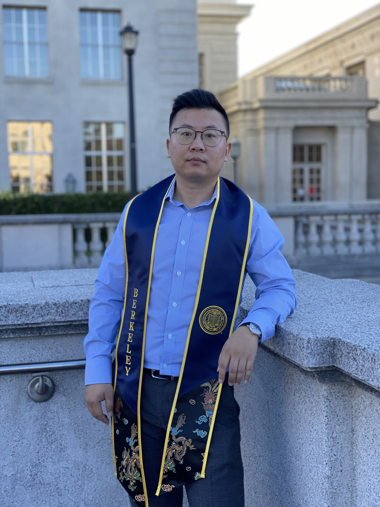

Gang Hu

Summary
At UC Berkeley, as an EECS major, I've balanced intensive academic pursuits with real-world leadership roles from my military tenure. My portfolio boasts of pivotal accomplishments - from spearheading significant logistics operations in Iraq to claiming victory at the Spring 2022 TI Design Contest. My stint as a GBO Leader accentuates my commitment to teamwork and effective problem-solving. Driven by a passion for engineering and computing, I'm always up for new learning experiences, thriving in diverse team environments, and navigating uncharted territories. I'm actively seeking opportunities where innovation aligns with purpose and effciency.
Education
- Bachelor of Sciences in Electrical Engineering and Computer Sciences (EECS)
University of California, Berkeley, CA | August 2021 - December 2023
Awards:
- First Place - Spring 2022 TI Design Contest,"Perfect S1XT33N"
Experience
- Pintos Operating System Projects
CS 162: Operating Systems and Systems Programming | January 2023 - May 2023
- User Programs: Added core functionalities including argument passing and essential syscalls
- Threading System: Introduced multithreaded user support and optimized scheduling with a priority mechanism
- File Systems: Enhanced file system operations, implemented a buffer cache for efficient disk access
- Golden Bear Orientation (GBO) Leader, New Student Services
University of California, Berkeley | April 2022 - August 2022
- Orientation Leadership: Directed recruitment for leaders, facilitated student activities, collaborated with a co-leader for session design, and addressed incoming student concerns, offering campus life insights
- Gitlet: Your Own Version-Control System
CS 61B: Data Structures- UC Berkeley | January 2022
- Version Control System Development: Developed "Gitlet" in Java, a streamlined version of Git with core version control features
- Core Features Implemented: Enabled directory snapshot commits, version restorations, log views, branch management with merging, and ensured commit tree immutability for data protection
- Automated Logistical Specialist
U.S. Army | November 2013 - May 2021
- Honors & Recognitions: Awarded multiple Army Achievement Medals and a Good Conduct Medal for exemplary service
- Logistics Management: Spearheaded the oversight of all Q West Forward Logistics Element (FLE) ITEF stocks, with assets surpassing $100 million, during deployment in support of Operation Inherent Resolve (OIR)
- Team Leadership: Led a supply team comprising 5 soldiers; supervised daily tasks, evaluated performance metrics, and granted commendations for outstanding service
Key Skills
- Programming Languages: Java, Python, C++
- Web Development: HTML, CSS, JavaScript, React
- Leadership: Military service; GBO leadership at UC Berkeley
- Adaptability: Thrives in new environments
- Precision: Detail-oriented approach
Discover More